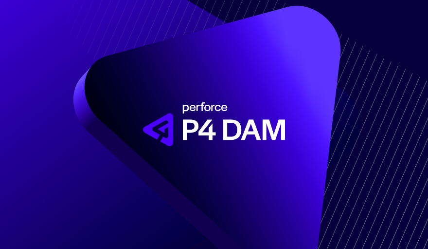
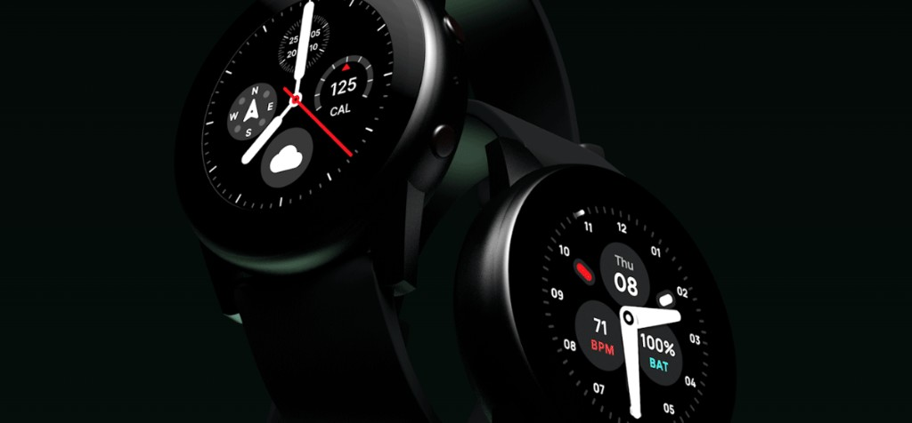
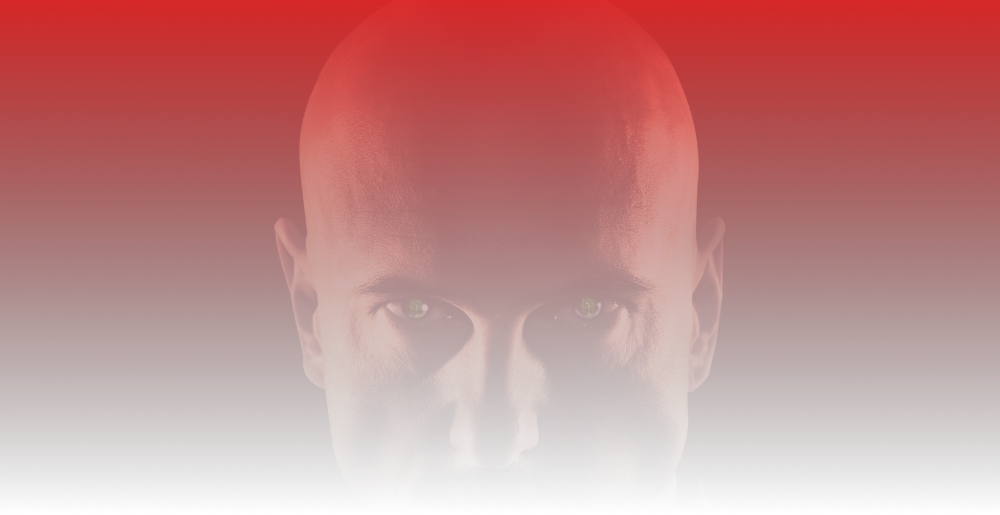

Ben Turner, Product Designer.
Right now I'm building AI workflows at scale, shipping AI features end to end, and steering product direction across multiple products. I'm based in Carrickfergus, Northern Ireland and I work at Perforce.
Right now I'm building AI workflows at scale, shipping AI features end to end, and steering product direction across multiple products. I'm based in Carrickfergus, Northern Ireland and I work at Perforce.

When front-end capacity dropped from six developers to two, I built a Claude Code workflow that moved design handoff from static screens to functional product code.

25 users told us the automation builder was confusing. I redesigned it end-to-end, and the result became the foundation for Budibase’s pivot to an AI-first platform.

A showcase of UI work from my time at Budibase, translating a powerful but complex low-code platform into interfaces that feel simple and approachable.

Full digital rebrand for CityFibre: website, portal, landing pages, emails. Resulted in a 90%+ lift in conversions through a combination of new brand design and UX improvements.

Led a UX research workshop with Vodafone, TalkTalk, and Zen to uncover pain points in CityFibre’s B2B portal, using Figma and Typeform instead of a formal testing budget.

A wearable brand I created: five premium watch faces for Facer, built for battery life and outdoor readability, plus a Creator’s Toolkit with 3D mockups. Proceeds go to RNIB.

An entire strategy game upscaled to 4K resolution using AI. I helped test the project when it originally released.
Another side project is on the way. Check back later for updates.
Ben led a research project that completely changed how we approach development, giving us the insights we needed to actually back our strategy with data. He just has a really strong instinct for understanding what users need. He’s meticulous, cares about the work, and brings a great attitude to the team.

Jamie Birss
Product Marketing Manager, Budibase
Ben has a great eye for UX and isn’t afraid to scrap an existing UI if there’s a better way to do it. He uses AI to build out prototypes fast, which means we can get end-to-end features published much quicker than usual. He’s also just a laid-back, approachable guy - design reviews with him were always easy and collaborative. I’d definitely work with him again.

Daniel Robinson
Knowledge Engineer & Technical Writer, Perforce